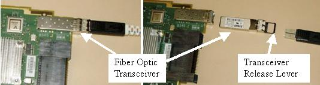

Operating Documentation
Direction 5307452-8EN, Rev# 4
Discovery CT750 HD Service Methods - Adv
Operating Documentation |
| Required Persons | Preliminary Reqs | Procedure | Finalization |
|---|---|---|---|
| 1 | NA | 30 mins | 15 mins |
This procedure defines the necessary steps to remove and replace a DCB or DIFB card.
| Last Revised: | June 5, 2008 |
| Item | Qty | Effectivity | Part# | Manufacturer | |
|---|---|---|---|---|---|
| Standard FE Toolkit | AR | - | - | - | |
| FE Torque wrench set | 1 | - | - | - | |
| Straight drive bit or Torx T20 bit | 1 | - | - | - | |
| 5mm bit | 1 | - | - | - | |
| Item | Qty | Effectivity | Part# | Manufacturer | |
|---|---|---|---|---|---|
| DIFB or DCB board | AR | - | - | - | |
| Follow ALL required safety and PPE procedures customary for your organization, when working on this product. | |
| Condition | Reference | Eff |
|---|---|---|
Only trained service personnel should service the GE CT Scanner. | - | - |
Remove gantry right side cover.
Refer to Replacement → Gantry → Enclosure → (Cover Removal Procedures).
Disable Axial drive and HVDC on the service switch panel.
Position the gantry for easy access to the DIFB chassis required and lock gantry rotation.
The DCB and DIFB cards are located behind the DAS on either side of the 180 degree weights. See Illustration 1 - VCT DAS Side View.
Illustration 1: VCT DAS Side View

Disable gantry 120 VAC from the service switch panel.
Remove the top cover for easier access to the DIFB chassis.
Rotate the gantry to position the desired DIFB chassis to the 2 o’clock position for easy access.
Remove/loosen the cover screws on the top of the DIFB chassis. See Illustration 2 - DCB/DIFB Chassis Top View.
Illustration 2: DCB/DIFB Chassis Top View

Grab the cover on both sides using your thumbs to press in on the cover pin release tabs and lift the cover straight up and off the chassis. The tabs push a spring-loaded pin in the chassis frame. The cover is kept in line with the chassis by side channels in the chassis.
If removing the DCB, first disconnect the fiber optic connection from the front side of the DAS plate.
The DCB has a removable fiber optic transceiver that clips into a socket on the DCB board. The lever that releases the module is locked in place when the fiber optic cable is installed. If the lever is lifted the transceiver module can be released and removed from the socket. The module comes with the DCB, it is not a separate part.
Illustration 3: Fiber optic transceiver module

| NOTE: | The release lever shown in the open position in Illustration 3 (right side) with the fiber optic cable removed must be in the closed position (lever folded up against the transceiver module) before connecting the fiber optic cable. |
Remove the DAS board (DCB or DIFB) as required.
Grab the board by the metal tab and pull away from backplane connector to remove board.
Remove the board from the chassis.
Insert the new card and push in on the card tab with your finger to seat the card into the backplane connector. You may need to shift the card up/down in the card guide slightly to align the connector. Gentle pressure is all that is needed to seat the connector in the backplane once the connector is aligned.
In installing a DCB, reinstall the fiber optic cable connection.
Look across the DIFB boards in the chassis from a side view to make sure all boards are seated to the same position. A board seen out of alignment with the others indicates a board not seated properly.
Install the DIFB card cage cover making sure the cover base tabs are in the slots at the base of the chassis.
Install the 4 captive cover screws and Torque to:
| 2.75 N-m | 2 lb-ft | 24 lb-in | 28 Kg-cm |
Install the 2 M6 cover screws and Torque to:
| 7.9 N-m | 5.8 lb-ft | 70 lb-in | 80.5 Kg-cm |
Install the gantry top cover.
Refer to Replacement → Gantry → Enclosure → (Cover Removal Procedures).
Turn on the Gantry 120 VAC, HVDC and Axial Drive service switches on the service switch panel.
Run the Flash download tool to make sure the card replaced is running the latest firmware. A console pop up message may also indicate that this is required after turning the DAS back on.
| NOTE: | The LED's of the new board may not flash in the same pattern as the existing boards until the Flash Download is performed. |
Install the gantry right side cover.
Run the System scanning test from the Functional Checks procedure list.